Hello! I enjoy writing and implementing code in every area of game design. I also use my background in music while doing technical audio, both in terms of adaptive music and sound design. I love learning new things and meeting new people, and both music and video games have provided me the opportunity to do so.
I like thinking about how each individual piece interacts with the others and working on a team to make everything sing. Currently, I am wearing many hats while working on Breach of Space (AI programming, implementation, audio designer, composer).
Having both a degree in music and a degree in game design,
I try to use both to inform the other. I am very interested in technical audio and adaptive soundtracks,
working to create an interesting and unique experience for every player. I mostly use Reason 11 for composing,
ProTools and Adobe Audition for recording, and FMOD Studio for implementation.
Game Audio Reel
Original Video Game Soundtrack(s)
Contact Me
I'm looking for work in the video game industry! I love traveling and hope to see more of the world, so I'm up for either relocation or remote work. If you want to connect, collaborate, or just chat, feel free to send me an email at christopher@christopherbutcher.com!
In Breach of Space, you must defeat the evil corporation that
is taking over your home planet. Stealthily distract, sabotage, and cause enough
mayhem for the robotic staff to leave your home among the stars for good.
On Breach of Space I serve as sound designer, composer, & AI programmer. Breach of Space is currently slated for release in early 2022. Breach of Space is made in Unity with FMOD Studio integration.
Design
Breach of Space has gone through many forms on its way to being a stealth game. For the very first iteration, Breach of Space was a procedurally generated multi-user dungeon crawler. I implemented code that would produce a randomized dungeon of prefab rooms linking up at their doors. I also learned the coding basics of putting our game online for multiplayer. Starting in this version and continuing throughout, I have been in charge of our repositories (Bitbucket & Git LFS), prototyping, and much of the in-engine implementation (shaders, UI, prefabs, animations).
In its next iteration, Breach of Space was a management simulator with a unique viewpoint: a console of monitors in an office at the habitat. I began work on a system for controlling multiple robot workers and various objects from the screen-in-a-screen setup of this iteration. This system linked into our in-game shop and would eventually be involved in your interactions with your boss. I also created the typing minigame that mimics the robot workers’ typing on malfunctioning equipment, as well as a mock-instant messenger app to communicate with the robots and your superiors.
Finally, Breach of Space became the stealth game it currently is today. My priority for much of this iteration has been the AI relating to the Robot enemies & their Waypoints, as well as recording and implementing the adaptive audio soundtsrack and sound effects for the game.
Waypoint Behavior
The enemies in Breach of Space must perform various actions when approaching their destination, so I created a simple Waypoint system for the various types of destinations (Patrol, Working, Suspicion, among others). Each of these implement this abstract class' IEnumerator WaypointBehavior so that, regardless of where the Robots end up and their internal state, they will perform whatever function they need to at the end of their journey. I also added a method to reset the Robot's state to default and stop any audio playing because of it.
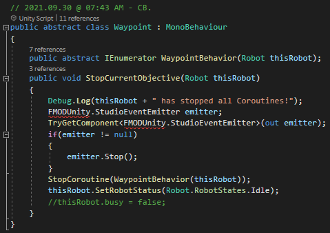
Player Detection
These are the methods used by enemy Robots to detect the player character (both visually & aurally). My goal for these methods was to create multiple ways for the player to trigger the suspicion of a Robot, allowing also for two ways to distract the Robot later on.
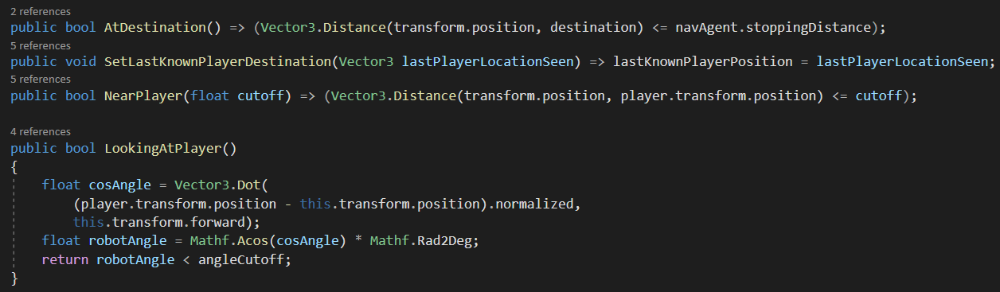
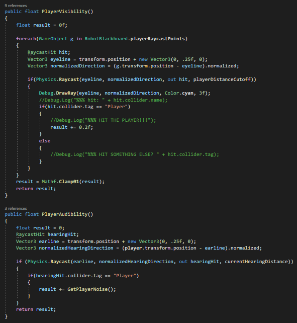
Suspicion Waypoint Creation
I wanted to integrate the player's actions into my Waypoint system, so RobotBlackboard (which is present in every Unity Scene in Breach of Space) creates and updates (when necessary) SuspicionWaypoints for a given Robot.
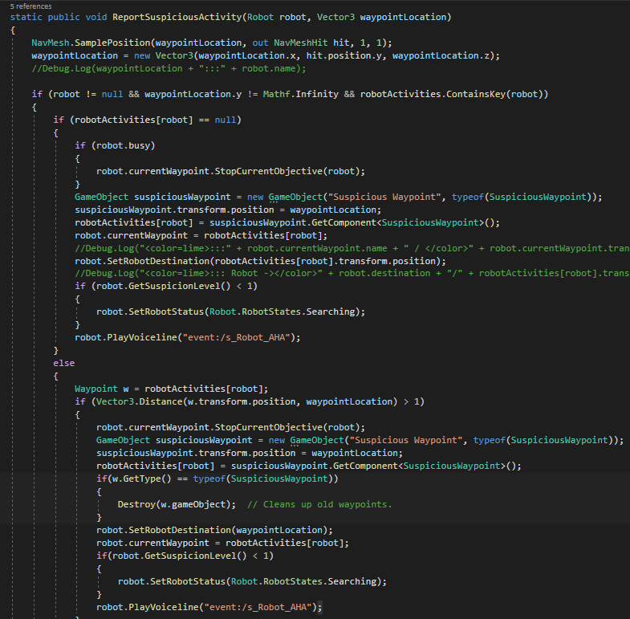
Adaptive Soundtrack
In Breach of Space, it's important to alert the player to world changes through multiple means. While I have accomplished this with enemy barks and ambient sounds, this is especially the goal of my soundtrack.
Each non-diegetic musical piece must be written with at least two distinct levels of intensity. For some, there might be three or four (such as in Greetings from <NULL> below)!
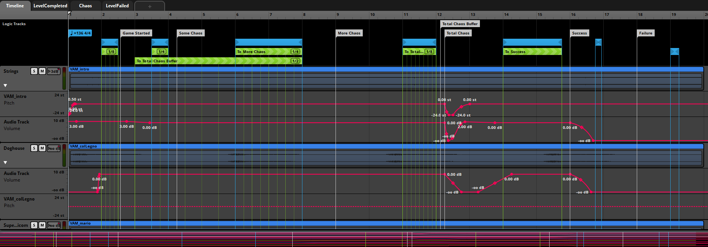
These "variations" are switched between as the player character is seen/pursued by the Robotic staff, but can also adapt based on the success of an objective (such as hacking a forcefield) or even the safety of the player-character's location.
Below are two such example of this. Surf Wax Andromeda & Distress Signal Flow provide the score to two of our levels. In both tracks, the first half plays when the player-character is sneaking around unnoticed. Halfway through each song is the variation that plays once the player-character has been noticed.
In Codetta, you play as a discarded reel-to-reel player
in a world without music. You must guide your character through the 1-bit world to save
the forgotten instruments from slimes & bring them together.
The goal of Codetta was to craft a short game
(roughly five minutes) with an emphasis on art style and sound design over the
course of six weeks in late 2020.
In addition to programming, I composed all of
the music, edited & mixed the sound effects, created all art assets, and designed
the layout for the game. Fonts & original sound effects were found online under the
CC0 license. My idea for the game focused on outliving your perceived obsolescence, and
how important it is to find a community you feel comfortable in. It was my first time using Construct 3,
but I enjoyed learning to use an engine I was not familiar with.
Robin's Quest! is about a princess who wakes
to find her kingdom overrun with monsters. She must venture across her
kingdom to figure out what is causing this mayhem and how to stop it!
Over the summer of 2020, I wanted to find a project to
keep myself busy while also teaching myself more about Unity implementation & C#
programming. So I gave myself a challenge: make a clone of The Legend of Zelda:
A Link to the Past in Unity. I was inspired by creepypasta horror stories such 0
as "Ben Drowned" & real-life glitches like Missingno. in the original Pokémon games, incorporating these elements
into my Zelda clone for fun. This led to me adding other styles of gameplay
(such as text adventure, turn-based RPG, and first-person 3D puzzle-solving) into
the planning for Robin's Quest!, both expanding the scope of the game and my
own education.
Programming
When figuring out the base systems of Robin's Quest!, I wanted to recreate
the classic video game scrolling dialogue system in Unity on my own.
I watched a few videos explaining how others handled this
(as Unity's built-in UI system perfromed differently), and began to write my own
code based on their explanation. I decided that there would only be a finite
amount of physical space in each of the three lines in the text boxes. This
allowed for consistent look & style among all conversations, signs, and
tutorials / player alerts.
Dialogue System
Each line of the text box is a string that can be edited in-engine, with each set of 3 being stored in a List. Each of those textbox Lists is stored also in a List, allowing for differences in conversation length. I added button icons so that they could be easily swapped out if necessary for alternate control schemes. I also wanted to add shake, color, wave, and other attributes to words to imply tone and emphasis. I set this up similar to HTML tags, allowing for each line to be written in a ScriptableObject and attached to the NPC / sign / trigger volume. The instantiation of multiple GameObjects, as well as the amount of time to parse multiple tags at runtime, does cause a dip in performance, but because the player is not in control during these moments it is not as easily noticeable. I would like to rewrite some of this code in the future, but for now it works and it helped me to understand how I wanted to create the system on my own.
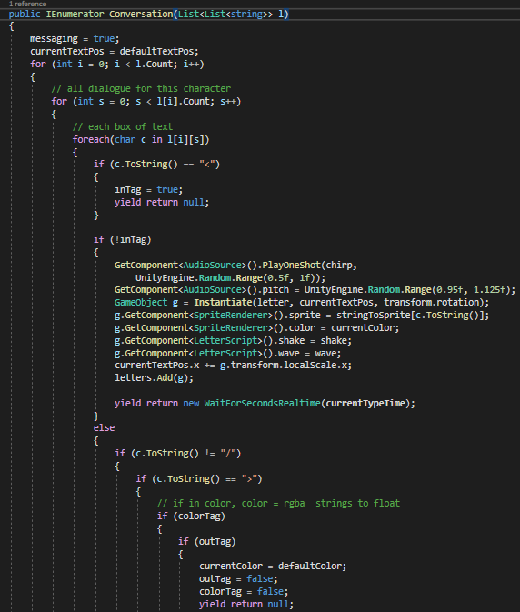
Music
For much of the music in Robin's Quest!, I wanted to create variations on different
character themes.
Robintroduction
The title screen of the game features a heroic version of Robin's theme.
Robin's Rest!
The game over music plays like a lullaby, with arpeggios rocking the player back and forth.
Buy! Right, Princess?
Meanwhile, the shop music plays like harsh muzak while still recalling the motif.
Symphony of the Knight
Later in the game when Robin is fighting a boss, the music will transition from the nostalgic NES-style chiptune used thus far to acoustic instrument renditions of the same songs. Towards the end of the game, the soundtrack becomes noticeably more modern (reflecting the break from the retro world). The above track demonstrates how this will sound.
Survive the night at camp, scare some teenagers,
and collect the most important pages of your afterlife!
Scare-Away Camp is a low-poly first-person
survival horror game where you play as a ghost stuck on the wrong side of the
veil. You must collect pages to an ancient tome that will help you return home. This
was my first ever game, kit bashed myself using Unity and found assets over the course of
three weeks. My partner & I also make our voice acting debut as scared teenagers.
Gridworld was a semester-long assignment for a class on
Game AI taught by Mike Sellers, with the goal being the creation of an AI-driven game world
without the need of player input.
The course went over various topics in artificial
intelligence, including Dijkstra's Algorithm, A* Pathfinding, Goal-Oriented Action
Planning (GOAP), Utility AI, and Behavior Trees, among other topics. Over the course of the
semester, we added to the Unity "game" to showcase these topics as they were covered.
A* Pathfinding
Here is the method responsible for A* pathfinding (adapted from the previously implemented Dijkstra's Algorithm pathfinding method) for the Sheep (or in my case Dogs) & Wolves (Slimes) of Gridworld.
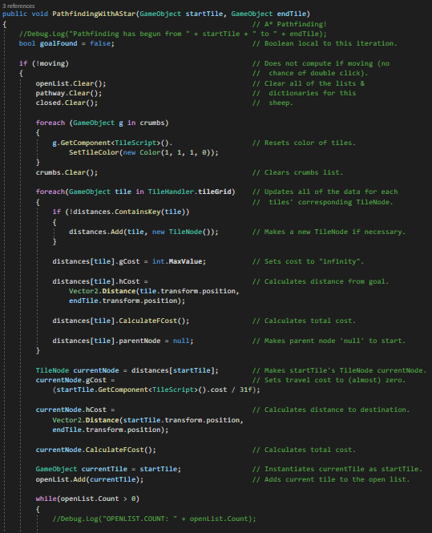
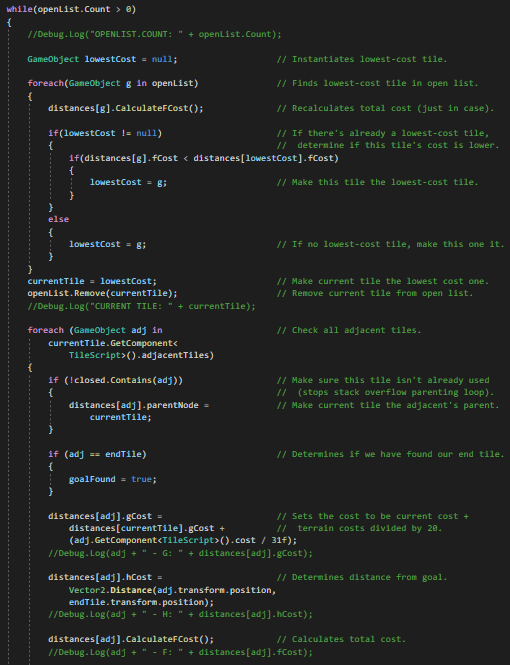
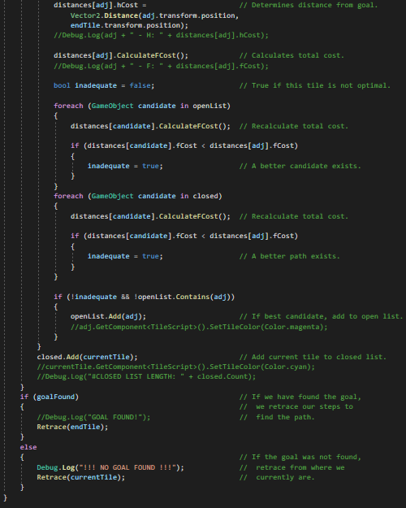
Utility AI
Before making a decision, Sheep must call this method to determine the values for their Utility AI. Then, depending on the winning value, another method is called to determine the navigation endpoint.
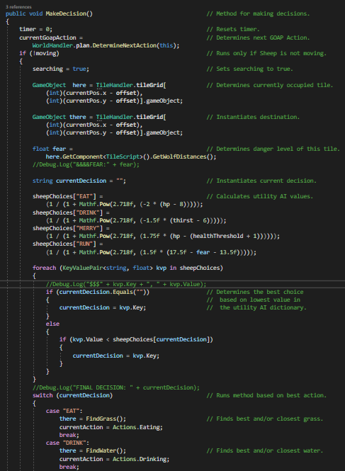
GOAP
All GOAP actions implement this abstract class. Once the Sheep or Wolf know what they should do next, the endpoint location tile is found using FineLocationForGOAP. If the preconditions of the GoapAction are aligned with the Sheep's/Wolf's current state as well as the World's current state (isPossible), PerformAction is called, behaving differently depending on whether a Sheep or a Wolf is calling the method (since there are some actions both can call). Finally, AdjustConditions is called, updating both the Wolf's/Sheep's internal state as well as the overall World state to those present in the GoapAction's postconditions Dictionary.
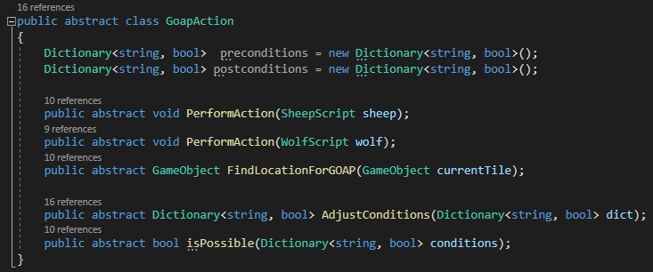
Tiles & Nodes
This is code relating to the Tile infrastructure of Gridworld as well as information needed for pathfinding & utility AI.
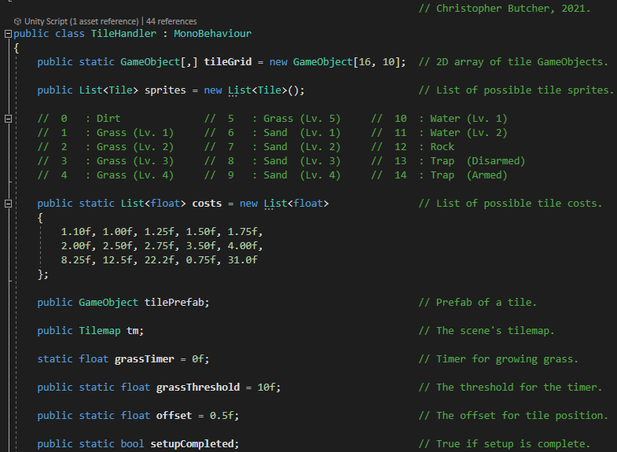
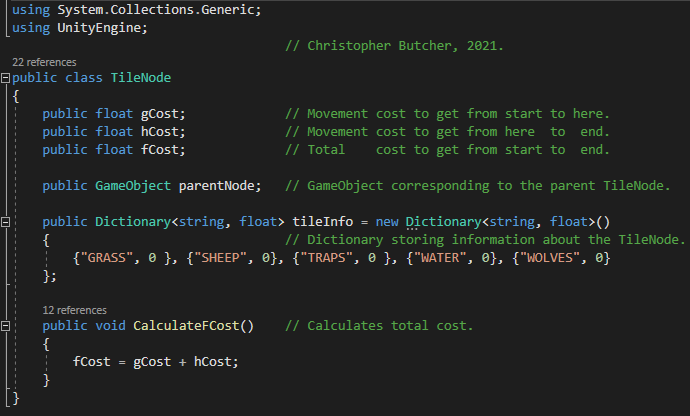
Survival Shooter Soundtrack
Download:
The goal of this project was to take an existing project (here, a Unity tutorial scene) and creating a pitch for a soundtrack based on the game's tone, theme, and gameplay using FMOD Studio. I decided to create a 3D adaptive audio soundtrack for this Survival Shooter tutorial, blending childlike playfulness with darker themes into a sort of danse macabre.
Each of the three enemy types are given their own instrument (or instrumental group). As an enemy approaches, the instrument becomes louder, and when they are defeated their designated instrument becomes quieter. In addition, the drums become louder and softer depending on the total amount of enemies in the level. However, after the player character's health dips below a certain threshold, the music and instrumentation becomes more intense, moving from classical and child-like to triplet-based dance rock to aggressive punk.
The sound effects for each enemy also reflect the materials they are made of as well as warped versions of their real-world counterparts (such as glitched Furby & Teddy Ruxpin sounds for the Zombears combined with the sound of breaking cassette tapes & muffled hits).
Survival Shooter Soundtrack Overview
Below is an extended look at how I set up the FMOD Studio project, as well as some gameplay.